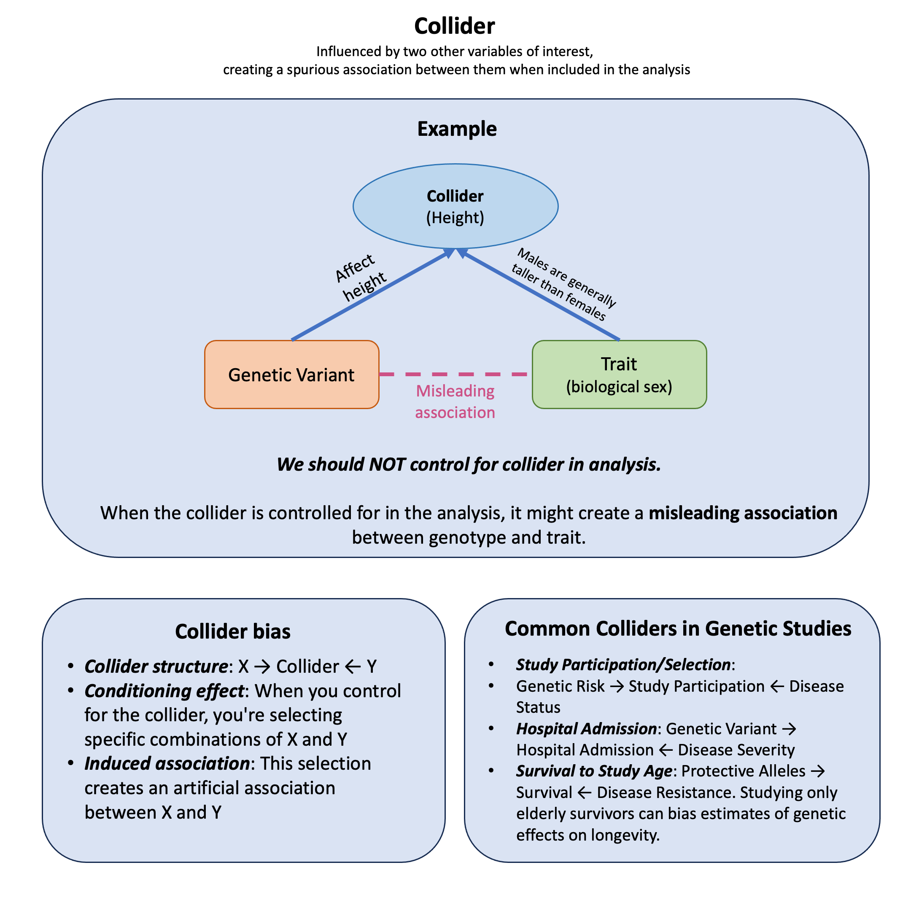

Collider#
A collider is a variable that is influenced by two other variables of interest, creating a spurious association between them when we condition on (select or control for) the collider in our analysis.
Graphical Summary#

Key Formula#
The key formula for the concept of a collider is represented in a causal diagram as:
Where:
\(W\) is the collider variable
\(X\) is one cause of the collider
\(Y\) is another cause of the collider
The arrows (\(\rightarrow\)) indicate the direction of causal influence
This diagram illustrates that a collider (\(W\)) is a variable that is caused by both the exposure (\(X\)) and the outcome (\(Y\)), creating a situation where \(X\) and \(Y\) both flow into \(W\).
When we condition on (adjust for, stratify by, or select based on) a collider, we can induce a spurious association between its causes, even if they were originally independent.
Technical Details#
Observed Association vs. True Effect#
When a collider is present and incorrectly controlled for:
True Effect: The real biological relationship (may be zero)
Collider Bias: The false association created by conditioning on the collider
Observed Association: What we measure after incorrectly adjusting (often misleading!)
The Problem: Conditioning on Colliders Creates Bias#
Unlike confounders, colliders should NOT be included in regression models. Including a collider as a covariate can create spurious associations:
This regression will give a biased estimate of \(\beta_1\) even when the true effect is zero.
Why This Happens: Selection Bias#
Controlling for a collider creates selection bias by conditioning on a variable that depends on both exposure and outcome:
Collider structure: \(\mathbf{X} \rightarrow \text{Collider} \leftarrow \mathbf{Y}\)
Conditioning effect: When you control for the collider, you’re selecting specific combinations of \(\mathbf{X}\) and \(\mathbf{Y}\)
Induced association: This selection creates an artificial association between \(\mathbf{X}\) and \(\mathbf{Y}\)
Common Colliders in Genetic Studies#
Study Participation/Selection: Genetic Risk \(\leftarrow\) Study Participation \(\rightarrow\) Disease Status
Hospital Admission: Genetic Variant \(\leftarrow\) Hospital Admission \(\rightarrow\) Disease Severity
Survival to Study Age: Protective Alleles \(\leftarrow\) Survival \(\rightarrow\) Disease Resistance. Studying only elderly survivors can bias estimates of genetic effects on longevity
The Key Principle#
Confounders: Control to remove bias
Colliders: Don’t control to avoid creating bias
Example#
Can autosomal SNPs (variants on non-sex chromosomes) be associated with biological sex? No. Sex is determined by sex chromosomes, so autosomal variants should have zero association with sex. Yet adjusting for height creates spurious genome-wide significant associations between autosomal SNPs and sex, purely from collider bias.
This demonstrates a key principle from Aschard et al. (2015): adjusting for heritable covariates can create biologically impossible associations.
The causal structure:
Both SNPs and sex influence height, but are causally independent. Height is the collider. Conditioning on height (by adjusting for it or stratifying by it) induces a spurious SNP-sex association: among tall people, height-increasing alleles make you more likely to be female; among short people, the reverse. This association exists only because we conditioned on the collider.
We’ll create data for 10,000 individuals where we know the true relationships. We’ll simulate:
Sex (independent, ~50% male/female)
A genetic variant (SNP) that affects height (independent of sex)
Height, which is influenced by both sex and the SNP
rm(list=ls())
set.seed(123)
# Sample size
N <- 10000
# Generate sex (0 = Female, 1 = Male)
# Sex is randomly assigned and independent of genetics
sex <- rbinom(N, 1, 0.5)
# Generate SNP (0, 1, 2 copies of a height-increasing allele)
# This is a common autosomal variant, independent of sex
snp <- sample(0:2, N, replace = TRUE, prob = c(0.25, 0.5, 0.25))
Now we build the causal relationships that make height a collider. Height is influenced by both sex and the genetic variant, but sex and the SNP are causally independent:
# Height is caused by BOTH sex and SNP
# Males are on average 13 cm taller
# Each copy of the height-increasing allele adds ~2 cm
height_cm <- 160 + # Baseline (female, 0 copies)
13 * sex + # Sex effect (males taller)
2 * snp + # SNP effect (each allele adds height)
rnorm(N, 0, 6) # Individual variation
Analysis 1: Correct Approach (No Adjustment for Height)#
First, let’s test the association between SNP and sex without adjusting for height. Since autosomal SNPs don’t cause sex, we should see no association:
# Standardize variables for easier interpretation
snp_scaled <- scale(snp)[,1]
sex_scaled <- scale(sex)[,1]
height_scaled <- scale(height_cm)[,1]
# Analysis 1: CORRECT - Don't adjust for height
# Model: sex ~ SNP
correct_model <- lm(sex_scaled ~ snp_scaled)
correct_summary <- summary(correct_model)
cat("Analysis 1 (CORRECT - no height adjustment):\n")
cat(sprintf(" beta = %.4f, p = %.4f → No association between SNP and sex\n\n",
correct_summary$coefficients[2, 1],
correct_summary$coefficients[2, 4]))
Analysis 1 (CORRECT - no height adjustment):
beta = 0.0101, p = 0.3110 → No association between SNP and sex
Analysis 2: Incorrect Approach (Adjusting for the Collider)#
Now let’s repeat the analysis, but this time adjusting for height. This is where collider bias strikes:
# Analysis 2: INCORRECT - Adjust for height (the collider)
# Model: sex ~ SNP + height
biased_model <- lm(sex_scaled ~ snp_scaled + height_scaled)
biased_summary <- summary(biased_model)
cat("Analysis 2 (WRONG - adjusted for height):\n")
cat(sprintf(" beta = %.4f, p = %.4f → Association between SNP and sex\n\n",
biased_summary$coefficients[2, 1],
biased_summary$coefficients[2, 4]))
Analysis 2 (WRONG - adjusted for height):
beta = -0.1178, p = 0.0000 → Association between SNP and sex
Analysis 3: Stratification by Height (Another Way to Condition on the Collider)#
Conditioning on a collider doesn’t just mean including it as a covariate—it also includes selecting or stratifying by that variable. Let’s see what happens when we only analyze tall people or only short people:
# Define tall and short groups based on height
tall_threshold <- quantile(height_cm, 0.75) # Top 25%
short_threshold <- quantile(height_cm, 0.25) # Bottom 25%
# Analysis 3a: Only tall people
print("============================ Tall group analysis ============================")
tall_subset <- height_cm >= tall_threshold
tall_model <- lm(sex_scaled[tall_subset] ~ snp_scaled[tall_subset])
tall_summary <- summary(tall_model)
cat("Analysis 3a (WRONG - limited to only tall individuals):\n")
cat(sprintf(" beta = %.4f, p = %.4f → Association between SNP and sex\n\n",
tall_summary$coefficients[2, 1],
tall_summary$coefficients[2, 4]))
# Analysis 3b: Only short people
print("============================ Short group analysis ============================")
short_subset <- height_cm <= short_threshold
short_model <- lm(sex_scaled[short_subset] ~ snp_scaled[short_subset])
short_summary <- summary(short_model)
cat("Analysis 3b (WRONG - limited to only short individuals):\n")
cat(sprintf(" beta = %.4f, p = %.4f → Association between SNP and sex\n\n",
short_summary$coefficients[2, 1],
short_summary$coefficients[2, 4]))
[1] "============================ Tall group analysis ============================"
Analysis 3a (WRONG - limited to only tall individuals):
beta = -0.0198, p = 0.0115 → Association between SNP and sex
[1] "============================ Short group analysis ============================"
Analysis 3b (WRONG - limited to only short individuals):
beta = -0.0237, p = 0.0003 → Association between SNP and sex
Compare Results From Analyses#
# Extract results
results <- data.frame(
Analysis = c(
"Correct (no height adjustment)",
"BIASED (adjusted for height)",
"BIASED (only tall people)",
"BIASED (only short people)"
),
Beta = c(
round(correct_summary$coefficients[2, 1], 4),
round(biased_summary$coefficients[2, 1], 4),
round(tall_summary$coefficients[2, 1], 4),
round(short_summary$coefficients[2, 1], 4)
),
SE = c(
round(correct_summary$coefficients[2, 2], 4),
round(biased_summary$coefficients[2, 2], 4),
round(tall_summary$coefficients[2, 2], 4),
round(short_summary$coefficients[2, 2], 4)
),
P_value = c(
round(correct_summary$coefficients[2, 4], 4),
round(biased_summary$coefficients[2, 4], 4),
round(tall_summary$coefficients[2, 4], 4),
round(short_summary$coefficients[2, 4], 4)
),
Interpretation = c(
"No association (correct!)",
"Strong spurious association",
"Spurious association (tall subset)",
"Spurious association (short subset)"
)
)
results
| Analysis | Beta | SE | P_value | Interpretation |
|---|---|---|---|---|
| <chr> | <dbl> | <dbl> | <dbl> | <chr> |
| Correct (no height adjustment) | 0.0101 | 0.0100 | 0.3110 | No association (correct!) |
| BIASED (adjusted for height) | -0.1178 | 0.0069 | 0.0000 | Strong spurious association |
| BIASED (only tall people) | -0.0198 | 0.0078 | 0.0115 | Spurious association (tall subset) |
| BIASED (only short people) | -0.0237 | 0.0066 | 0.0003 | Spurious association (short subset) |
Extended Reading#
Aschard et al. (2015). “Adjusting for Heritable Covariates Can Bias Effect Estimates in Genome-Wide Association Studies.” American Journal of Human Genetics, 96(3), 329-339. https://www.cell.com/ajhg/fulltext/S0002-9297(14)00527-8
This landmark paper demonstrates that adjusting for heritable covariates—traits with a genetic basis—can introduce significant bias into genome-wide association studies. The authors show that when genetic variants influence both an outcome of interest and the covariate being adjusted for, the effect estimates can be severely distorted, even creating false-positive associations. Using real data from large GWAS meta-analyses of anthropometric traits (waist-to-hip ratio and waist circumference adjusted for BMI), they found that approximately half of the reported associations could be explained by genetic effects on BMI rather than the primary outcome. The paper provides both theoretical framework and practical examples demonstrating that collider bias arises from shared causal factors between the outcome and covariate, and that standard adjustment methods cannot eliminate this bias when the underlying causal structure is unknown. This is essential reading for anyone conducting GWAS of correlated traits, as it highlights the importance of understanding causal relationships before deciding which variables to adjust for in your analysis.